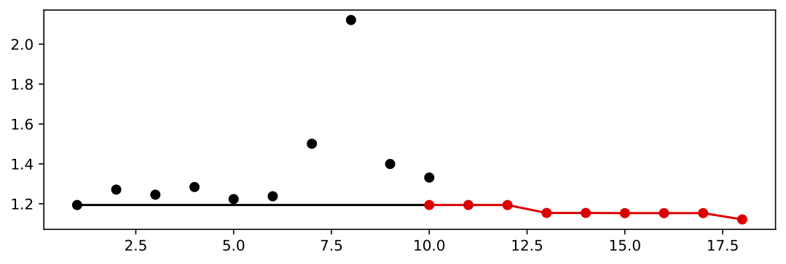
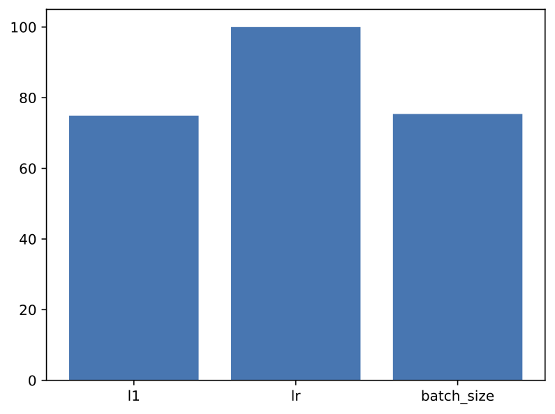
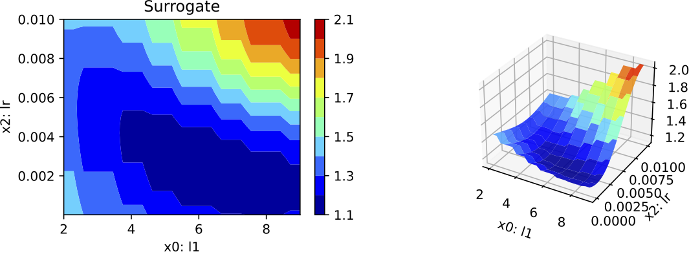
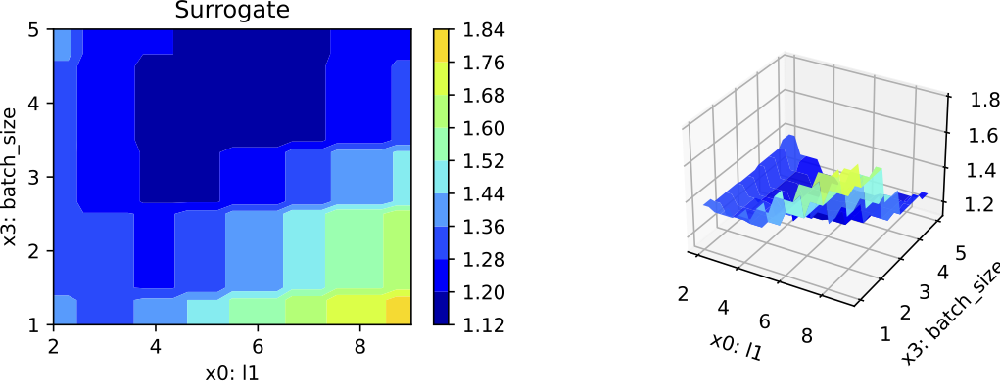
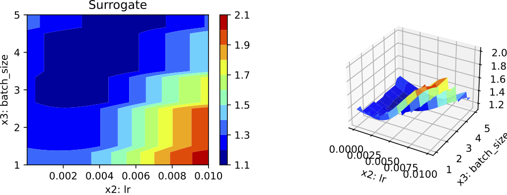
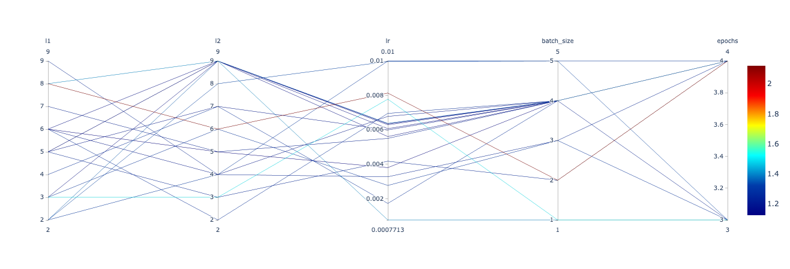

![]()
pip install spotPythonPyTorch Hyperparameter Tuning — A Tutorial for spotPython
Version 0.1.1
Abstract
The goal of hyperparameter tuning (or hyperparameter optimization) is to optimize the hyperparameters to improve the performance of the machine or deep learning model. spotPython (“Sequential Parameter Optimization Toolbox in Python”) is the Python version of the well-known hyperparameter tuner SPOT, which has been developed in the R programming environment for statistical analysis for over a decade. PyTorch is an optimized tensor library for deep learning using GPUs and CPUs. This document shows how to integrate the spotPython hyperparameter tuner into the PyTorch training workflow. As an example, the results of the CIFAR10 image classifier are used. In addition to an introduction to spotPython, this tutorial also includes a brief comparison with Ray Tune, a Python library for running experiments and tuning hyperparameters. This comparison is based on the PyTorch hyperparameter tuning tutorial. The advantages and disadvantages of both approaches are discussed. We show that spotPython achieves similar or even better results while being more flexible and transparent than Ray Tune.
Hyperparameter Tuning
Hyperparameter tuning is an important, but often difficult and computationally intensive task. Changing the architecture of a neural network or the learning rate of an optimizer can have a significant impact on the performance .
The goal of hyperparameter tuning is to optimize the hyperparameters in a way that improves the performance of the machine learning or deep learning model. The simplest, but also most computationally expensive, approach uses manual search (or trial-and-error (Meignan et al. 2015)). Commonly encountered is simple random search, i.e., random and repeated selection of hyperparameters for evaluation, and lattice search (“grid search”). In addition, methods that perform directed search and other model-free algorithms, i.e., algorithms that do not explicitly rely on a model, e.g., evolution strategies (Bartz-Beielstein et al. 2014) or pattern search (Lewis, Torczon, and Trosset 2000) play an important role. Also, “hyperband”, i.e., a multi-armed bandit strategy that dynamically allocates resources to a set of random configurations and uses successive bisections to stop configurations with poor performance (Li et al. 2016), is very common in hyperparameter tuning. The most sophisticated and efficient approaches are the Bayesian optimization and surrogate model based optimization methods, which are based on the optimization of cost functions determined by simulations or experiments.
We consider below a surrogate model based optimization-based hyperparameter tuning approach based on the Python version of the SPOT (“Sequential Parameter Optimization Toolbox”) (Bartz-Beielstein, Lasarczyk, and Preuss 2005), which is suitable for situations where only limited resources are available. This may be due to limited availability and cost of hardware, or due to the fact that confidential data may only be processed locally, e.g., due to legal requirements. Furthermore, in our approach, the understanding of algorithms is seen as a key tool for enabling transparency and explainability. This can be enabled, for example, by quantifying the contribution of machine learning and deep learning components (nodes, layers, split decisions, activation functions, etc.). Understanding the importance of hyperparameters and the interactions between multiple hyperparameters plays a major role in the interpretability and explainability of machine learning models. SPOT provides statistical tools for understanding hyperparameters and their interactions. Last but not least, it should be noted that the SPOT software code is available in the open source spotPython package on github1, allowing replicability of the results. This tutorial descries the Python variant of SPOT, which is called spotPython. The R implementation is described in Bartz et al. (2022). SPOT is an established open source software that has been maintained for more than 15 years (Bartz-Beielstein, Lasarczyk, and Preuss 2005) (Bartz et al. 2022).
This tutorial is structured as follows. The concept of the hyperparameter tuning software spotPython is described in Section 2. Section 3 describes the integration of spotPython into the PyTorch training workflow and presents the results. Finally, Section 5 presents a summary and an outlook.
Note
The corresponding .ipynb notebook (Bartz-Beielstein 2023) is updated regularly and reflects updates and changes in the spotPython package. It can be downloaded from https://github.com/sequential-parameter-optimization/spotPython/blob/main/notebooks/14_spot_ray_hpt_torch_cifar10.ipynb.
The Hyperparameter Tuning Software SPOT
Surrogate model based optimization methods are common approaches in simulation and optimization. SPOT was developed because there is a great need for sound statistical analysis of simulation and optimization algorithms. SPOT includes methods for tuning based on classical regression and analysis of variance techniques. It presents tree-based models such as classification and regression trees and random forests as well as Bayesian optimization (Gaussian process models, also known as Kriging). Combinations of different meta-modeling approaches are possible. SPOT comes with a sophisticated surrogate model based optimization method, that can handle discrete and continuous inputs. Furthermore, any model implemented in scikit-learn can be used out-of-the-box as a surrogate in spotPython.
SPOT implements key techniques such as exploratory fitness landscape analysis and sensitivity analysis. It can be used to understand the performance of various algorithms, while simultaneously giving insights into their algorithmic behavior. In addition, SPOT can be used as an optimizer and for automatic and interactive tuning. Details on SPOT and its use in practice are given by Bartz et al. (2022).
A typical hyperparameter tuning process with spotPython consists of the following steps:
- Loading the data (training and test datasets), see Section 4.2.
- Specification of the preprocessing model, see Section 4.3. This model is called
prep_model(“preparation” or pre-processing). The information required for the hyperparameter tuning is stored in the dictionaryfun_control. Thus, the information needed for the execution of the hyperparameter tuning is available in a readable form. - Selection of the machine learning or deep learning model to be tuned, see Section 4.4. This is called the
core_model. Once thecore_modelis defined, then the associated hyperparameters are stored in thefun_controldictionary. First, the hyperparameters of thecore_modelare initialized with the default values of thecore_model. As default values we use the default values contained in thespotPythonpackage for the algorithms of thetorchpackage. - Modification of the default values for the hyperparameters used in
core_model, see Section 4.6.1. This step is optional.- numeric parameters are modified by changing the bounds.
- categorical parameters are modified by changing the categories (“levels”).
- Selection of target function (loss function) for the optimizer, see Section 4.7.
- Calling SPOT with the corresponding parameters, see Section 4.8. The results are stored in a dictionary and are available for further analysis.
- Presentation, visualization and interpretation of the results, see Section 4.9.
Hyperparameter Tuning for PyTorch With spotPython
In this tutorial, we will show how spotPython can be integrated into the PyTorch training workflow. It is based on the tutorial “Hyperparameter Tuning with Ray Tune” from the PyTorch documentation (PyTorch 2023a), which is an extension of the tutorial “Training a Classifier” (PyTorch 2023b) for training a CIFAR10 image classifier.
This document refers to the following software versions:
python: 3.10.10torch: 2.0.1torchvision: 0.15.0spotPython: 0.1.1
spotPython can be installed via pip2.
Results that refer to the Ray Tune package are taken from https://PyTorch.org/tutorials/beginner/hyperparameter_tuning_tutorial.html3.
Setup
MAX_TIME = 30
INIT_SIZE = 10
DEVICE = "cpu" # "cuda:0"The notebook is updated regularly and reflects updates and changes in the spotPython package.
Initialization of the fun_control Dictionary
spotPython uses a dictionary for storing the information required for the hyperparameter tuning process. This dictionary is called fun_control and is initialized with the function fun_control_init. The function fun_control_init returns a skeleton dictionary. The dictionary is filled with the required information for the hyperparameter tuning process. It stores the hyperparameter tuning settings, e.g., the deep learning network architecture that should be tuned, the classification (or regression) problem, and the data that is used for the tuning. The dictionary is used as an input for the SPOT function.
fun_control = fun_control_init()Data Loading
The data loading process is implemented in the same manner as described in the Section “Data loaders” in PyTorch (2023a). The data loaders are wrapped into the function load_data. A global data directory is used, which allows sharing the data directory between different trials.
def load_data(data_dir="./data"):
transform = transforms.Compose([
transforms.ToTensor(),
transforms.Normalize((0.5, 0.5, 0.5), (0.5, 0.5, 0.5))
])
trainset = torchvision.datasets.CIFAR10(
root=data_dir, train=True, download=True, transform=transform)
testset = torchvision.datasets.CIFAR10(
root=data_dir, train=False, download=True, transform=transform)
return trainset, testsetThe test and train data are added to the dictionary fun_control.
train, test = load_data()
n_samples = len(train)
# add the dataset to the fun_control
fun_control.update({
"train": train,
"test": test,
"n_samples": n_samples})Specification of the Preprocessing Model
After the training and test data are specified and added to the fun_control dictionary, spotPython allows the specification of a data preprocessing pipeline, e.g., for the scaling of the data or for the one-hot encoding of categorical variables. The preprocessing model is called prep_model (“preparation” or pre-processing) and includes steps that are not subject to the hyperparameter tuning process. The preprocessing model is specified in the fun_control dictionary. The preprocessing model can be implemented as a sklearn pipeline. The following code shows a typical preprocessing pipeline:
categorical_columns = ["cities", "colors"]
one_hot_encoder = OneHotEncoder(handle_unknown="ignore", sparse_output=False)
prep_model = ColumnTransformer(
transformers=[
("categorical", one_hot_encoder, categorical_columns),
],
remainder=StandardScaler(),
)Because the Ray Tune (ray[tune]) hyperparameter tuning as described in PyTorch (2023a) does not use a preprocessing model, the preprocessing model is set to None here.
prep_model = None
fun_control.update({"prep_model": prep_model})Select algorithm and core_model_hyper_dict
The same neural network model as implemented in the section “Configurable neural network” of the PyTorch tutorial (PyTorch 2023a) is used here. We will show the implementation from PyTorch (2023a) in Section 4.4.1 first, before the extended implementation with spotPython is shown in Section 4.4.2.
Implementing a Configurable Neural Network With Ray Tune
We used the same hyperparameters that are implemented as configurable in the PyTorch tutorial. We specify the layer sizes, namely l1 and l2, of the fully connected layers:
class Net(nn.Module):
def __init__(self, l1=120, l2=84):
super(Net, self).__init__()
self.conv1 = nn.Conv2d(3, 6, 5)
self.pool = nn.MaxPool2d(2, 2)
self.conv2 = nn.Conv2d(6, 16, 5)
self.fc1 = nn.Linear(16 * 5 * 5, l1)
self.fc2 = nn.Linear(l1, l2)
self.fc3 = nn.Linear(l2, 10)
def forward(self, x):
x = self.pool(F.relu(self.conv1(x)))
x = self.pool(F.relu(self.conv2(x)))
x = x.view(-1, 16 * 5 * 5)
x = F.relu(self.fc1(x))
x = F.relu(self.fc2(x))
x = self.fc3(x)
return xThe learning rate, i.e., lr, of the optimizer is made configurable, too:
optimizer = optim.SGD(net.parameters(), lr=config["lr"], momentum=0.9)Implementing a Configurable Neural Network With spotPython
spotPython implements a class which is similar to the class described in the PyTorch tutorial. The class is called Net_CIFAR10 and is implemented in the file netcifar10.py.
import spotPython.torch.netcore as netcore
class Net_CIFAR10(netcore.Net_Core):
def __init__(self, l1, l2, lr, batch_size, epochs, k_folds, patience):
super(Net_CIFAR10, self).__init__(
lr=lr, batch_size=batch_size, epochs=epochs, k_folds=k_folds,
patience=patience
)
self.conv1 = nn.Conv2d(3, 6, 5)
self.pool = nn.MaxPool2d(2, 2)
self.conv2 = nn.Conv2d(6, 16, 5)
self.fc1 = nn.Linear(16 * 5 * 5, l1)
self.fc2 = nn.Linear(l1, l2)
self.fc3 = nn.Linear(l2, 10)
def forward(self, x):
x = self.pool(F.relu(self.conv1(x)))
x = self.pool(F.relu(self.conv2(x)))
x = x.view(-1, 16 * 5 * 5)
x = F.relu(self.fc1(x))
x = F.relu(self.fc2(x))
x = self.fc3(x)
return xNet_CIFAR10 inherits from the class Net_Core which is implemented in the file netcore.py. It implements the additional attributes that are common to all neural network models. The attributes are the learning rate lr, the batch size batch_size, the number of epochs epochs, the number of folds k_folds for the cross validation, and the patience patience for the early stopping. The class Net_Core is shown below.
from torch import nn
class Net_Core(nn.Module):
def __init__(self, lr, batch_size, epochs, k_folds, patience):
super(Net_Core, self).__init__()
self.lr = lr
self.batch_size = batch_size
self.epochs = epochs
self.k_folds = k_folds
self.patience = patienceComparison of the Approach Described in the PyTorch Tutorial With spotPython
Comparing the class Net from the PyTorch tutorial and the class Net_CIFAR10 from spotPython, we see that the class Net_CIFAR10 has additional attributes and does not inherit from nn directly. It adds an additional class, Net_core, that takes care of additional attributes that are common to all neural network models, e.g., the learning rate lr or the batch size batch_size.
spotPython’s core_model implements an instance of the Net_CIFAR10 class. In addition to the basic neural network model, the core_model can use these additional attributes. spotPython provides methods for handling these additional attributes to guarantee 100% compatibility with the PyTorch classes. The method add_core_model_to_fun_control adds the hyperparameters and additional attributes to the fun_control dictionary. The method is shown below.
core_model = Net_CIFAR10
fun_control = add_core_model_to_fun_control(core_model=core_model,
fun_control=fun_control,
hyper_dict=TorchHyperDict,
filename=None)
Note
In addition to the class Net from the PyTorch tutorial, the class Net_CIFAR10 has additional attributes, e.g.:
- learning rate (
lr), - batch size (
batch_size), - epochs (
epochs), - k_folds (
k_folds), and - early stopping criterion “patience” (
patience)
Further attributes can be easily added to the class, e.g., optimizer or loss_function.
The Search Space
In Section 4.5.1, we first describe how to configure the search space with ray[tune] (as shown in PyTorch (2023a)) and then how to configure the search space with spotPython in Section 4.5.2.
Configuring the Search Space With Ray Tune
Ray Tune’s search space can be configured as follows (PyTorch 2023a):
config = {
"l1": tune.sample_from(lambda _: 2**np.random.randint(2, 9)),
"l2": tune.sample_from(lambda _: 2**np.random.randint(2, 9)),
"lr": tune.loguniform(1e-4, 1e-1),
"batch_size": tune.choice([2, 4, 8, 16])
}The tune.sample_from() function enables the user to define sample methods to obtain hyperparameters. In this example, the l1 and l2 parameters should be powers of 2 between 4 and 256, so either 4, 8, 16, 32, 64, 128, or 256. The lr (learning rate) should be uniformly sampled between 0.0001 and 0.1. Lastly, the batch size is a choice between 2, 4, 8, and 16.
At each trial, ray[tune] will randomly sample a combination of parameters from these search spaces. It will then train a number of models in parallel and find the best performing one among these. ray[tune] uses the ASHAScheduler which will terminate bad performing trials early.
Configuring the Search Space With spotPython
The hyper_dict Hyperparameters for the Selected Algorithm
spotPython uses simple JSON files for the specification of the hyperparameters. Users can specify their individual JSON files, or they can use the JSON files provided by spotPython. The JSON file for the core_model is called torch_hyper_dict.json.
Each entry in the JSON file represents one hyperparameter with the following structure: type, default, transform, lower, and upper. The corresponding entries for the Net_CIFAR10 class are shown below.
{"Net_CIFAR10":
{
"l1": {
"type": "int",
"default": 5,
"transform": "transform_power_2_int",
"lower": 2,
"upper": 9},
"l2": {
"type": "int",
"default": 5,
"transform": "transform_power_2_int",
"lower": 2,
"upper": 9},
"lr": {
"type": "float",
"default": 1e-03,
"transform": "None",
"lower": 1e-05,
"upper": 1e-02},
"batch_size": {
"type": "int",
"default": 4,
"transform": "transform_power_2_int",
"lower": 1,
"upper": 4},
"epochs": {
"type": "int",
"default": 3,
"transform": "transform_power_2_int",
"lower": 1,
"upper": 4},
"k_folds": {
"type": "int",
"default": 2,
"transform": "None",
"lower": 2,
"upper": 3},
"patience": {
"type": "int",
"default": 5,
"transform": "None",
"lower": 2,
"upper": 10}
}
}Categorical Hyperparameters
In contrast to ray[tune], spotPython can handle numerical, boolean, and categorical hyperparameters. Since ray[tune] does not tune categorical hyperparameters, they are not used here. However, they can be specified in the JSON file in a similar way as the numerical hyperparameters as shown below:
"factor_hyperparameter": {
"levels": ["A", "B", "C"],
"type": "factor",
"default": "B",
"transform": "None",
"core_model_parameter_type": "str",
"lower": 0,
"upper": 2},Modifying the Hyperparameters
Ray tune (PyTorch 2023a) does not provide a way to change the specified hyperparameters without re-compilation. However, spotPython provides functions for modifying the hyperparameters, their bounds and factors as well as for activating and de-activating hyperparameters without re-compilation of the Python source code. These functions are described in the following.
Modify hyper_dict Hyperparameters for the Selected Algorithm aka core_model
After specifying the model, the corresponding hyperparameters, their types and bounds are loaded from the JSON file torch_hyper_dict.json. After loading, the user can modify the hyperparameters, e.g., the bounds. spotPython provides a simple rule for de-activating hyperparameters: If the lower and the upper bound are set to identical values, the hyperparameter is de-activated. This is useful for the hyperparameter tuning, because it allows to specify a hyperparameter in the JSON file, but to de-activate it in the fun_control dictionary. This is done in the next step.
Modify Hyperparameters of Type numeric and integer (boolean)
Since the hyperparameter k_folds is not used in the PyTorch tutorial, it is de-activated here by setting the lower and upper bound to the same value. Note, k_folds is of type “integer”.
fun_control = modify_hyper_parameter_bounds(fun_control, "batch_size", bounds=[1, 5])
fun_control = modify_hyper_parameter_bounds(fun_control, "k_folds", bounds=[0, 0])
fun_control = modify_hyper_parameter_bounds(fun_control, "patience", bounds=[5, 5])
fun_control["core_model_hyper_dict"]Modify Hyperparameter of Type factor
In a similar manner as for the numerical hyperparameters, the categorical hyperparameters can be modified. For example, the hyperparameter optimizer is de-activated here by choosing only one value, here: "SGD".
fun_control = modify_hyper_parameter_levels(fun_control, "optimizer", ["SGD"])New configurations can be chosen by adding or deleting levels. For example, the hyperparameter optimizer can be re-configured as follows:
fun_control = modify_hyper_parameter_levels(fun_control, "optimizer", ["SGD", "Adam"])In this case, two optimizers ("SGD" and "Adam") are compared during the spotPython hyperparameter tuning. Now, the hyperparameter optimizer is active again.
Evaluation
The evaluation procedure requires the specification of two elements:
- the way how the data is split into a train and a test set and
- the loss function (and a metric).
Hold-out Data Split and Cross-Validation
As a default, spotPython provides a standard hold-out data split and cross validation.
Hold-out Data Split
If a hold-out data split is used, the data will be partitioned into a training, a validation, and a test data set. The split depends on the setting of the eval parameter. If eval is set to train_hold_out, one data set, usually the original training data set, is split into a new training and a validation data set. The training data set is used for training the model. The validation data set is used for the evaluation of the hyperparameter configuration and early stopping to prevent overfitting. In this case, the original test data set is not used. The following splits are performed in the hold-out setting: \(\{\text{train}_0, \text{test}\} \rightarrow \{\text{train}_1, \text{validation}_1, \text{test}\}\), where \(\text{train}_1 \cup \text{validation}_1 = \text{train}_0\).
Note
spotPython returns the hyperparameters of the machine learning and deep learning models, e.g., number of layers, learning rate, or optimizer, but not the model weights. Therefore, after the SPOT run is finished, the corresponding model has to be trained again with the best hyperparameter configuration. The training is performed on the training data set. The test data set is used for the final evaluation of the model.
Summarizing, the following splits are performed in the hold-out setting:
- Run
spotPythonwithevalset totrain_hold_outto determine the best hyperparameter configuration. - Train the model with the best hyperparameter configuration on the training data set:
train_save(model_spot, train, "model_spot.pt").
- Test the model on the test data:
test_saved(model_spot, test, "model_spot.pt")
These steps will be exemplified in the following sections.
In addition to this hold-out setting, spotPython provides another hold-out setting, where an explicit test data is specified by the user that will be used as the validation set. To choose this option, the eval parameter is set to test_hold_out. In this case, the training data set is used for the model training. Then, the explicitly defined test data set is used for the evaluation of the hyperparameter configuration (the validation).
Cross-Validation
The cross validation setting is used by setting the eval parameter to train_cv or test_cv. In both cases, the data set is split into \(k\) folds. The model is trained on \(k-1\) folds and evaluated on the remaining fold. This is repeated \(k\) times, so that each fold is used exactly once for evaluation. The final evaluation is performed on the test data set. The cross validation setting is useful for small data sets, because it allows to use all data for training and evaluation. However, it is computationally expensive, because the model has to be trained \(k\) times.
Note
Combinations of the above settings are possible, e.g., cross validation can be used for training and hold-out for evaluation or . Also, cross validation can be used for training and testing. Because cross validation is not used in the PyTorch tutorial (PyTorch 2023a), it is not considered further here.
Loss Functions and Metrics
The key "criterion" specifies the loss function which is used during the optimization. There are several different loss functions under PyTorch’s nn package. For example, a simple loss is MSELoss, which computes the mean-squared error between the output and the target. In this tutorial we will use CrossEntropyLoss, because it is also used in the PyTorch tutorial.
In addition to the loss function, spotPython provides access to a large number of metrics. The key "metric_sklearn" is used for metrics that follow the scikit-learn conventions4. Because the PyTorch tutorial uses the accuracy as metric, we use the same metric here. Currently, accuracy is computed in the tutorial’s example code. Therefore, we will use the same implementation here and set the key "metric_sklearn" to None.
weights = 1.0
criterion = CrossEntropyLoss
shuffle = True
eval = "train_hold_out"
device = DEVICE
show_batch_interval = 100_000
save_model = True
path="torch_model.pt"
fun_control.update({
"data_dir": None,
"checkpoint_dir": None,
"horizon": None,
"oml_grace_period": None,
"weights": weights,
"step": None,
"log_level": 50,
"weight_coeff": None,
"metric": None,
"metric_sklearn": None,
"criterion": criterion,
"shuffle": shuffle,
"eval": eval,
"device": device,
"show_batch_interval": show_batch_interval,
"save_model": save_model,
"path": path,
})Calling the SPOT Function
Now, the dictionary fun_control contains all information needed for the hyperparameter tuning. Before the hyperparameter tuning is started, it is recommended to take a look at the experimental design. The method gen_design_table generates a design table as follows:
print(gen_design_table(fun_control))This allows to check if all information is available and if the information is correct. Table 1 shows the experimental design for the hyperparameter tuning. Hyperparameter transformations are shown in the column “transform”, e.g., the l1 default is 5, which results in the value \(2^5 = 32\) for the network, because the transformation transform_power_2_int was selected in the JSON file. The default value of the batch_size is set to 4, which results in a batch size of \(2^4 = 16\).
| name | type | default | lower | upper | transform |
|---|---|---|---|---|---|
| l1 | int | 5 | 2 | 9 | transform_power_2_int |
| l2 | int | 5 | 2 | 9 | transform_power_2_int |
| lr | float | 0.001 | 1e-05 | 0.01 | None |
| batch_size | int | 4 | 1 | 4 | transform_power_2_int |
| epochs | int | 3 | 3 | 4 | transform_power_2_int |
| k_folds | int | 2 | 0 | 0 | None |
The objective function fun_torch is selected next. It implements an interface from PyTorch’s training, validation, and testing methods to spotPython.
fun = HyperTorch().fun_torchThe spotPython hyperparameter tuning is started by calling the Spot function. Here, we will run the tuner for approx. 30 minutes (max_time). Note: the initial design is always evaluated in the spotPython run. As a consequence, the run may take longer than specified by max_time, because the evaluation time of initial design (here: init_size, 10 points) is performed independently of max_time.
spot_tuner = spot.Spot(fun=fun,
lower = lower,
upper = upper,
fun_evals = inf,
fun_repeats = 1,
max_time = MAX_TIME,
noise = False,
tolerance_x = np.sqrt(np.spacing(1)),
var_type = var_type,
var_name = var_name,
infill_criterion = "y",
n_points = 1,
seed=123,
log_level = 50,
show_models= False,
show_progress= True,
fun_control = fun_control,
design_control={"init_size": INIT_SIZE,
"repeats": 1},
surrogate_control={"noise": True,
"cod_type": "norm",
"min_theta": -4,
"max_theta": 3,
"n_theta": len(var_name),
"model_optimizer": differential_evolution,
"model_fun_evals": 10_000,
"log_level": 50
})
spot_tuner.run(X_start=X_start)During the run, the following output is shown:
Epoch: 9
Batch: 1000. Batch Size: 4. Training Loss (running): 2.308
Batch: 2000. Batch Size: 4. Training Loss (running): 1.153
Batch: 3000. Batch Size: 4. Training Loss (running): 0.769
Batch: 4000. Batch Size: 4. Training Loss (running): 0.576
Batch: 5000. Batch Size: 4. Training Loss (running): 0.461
Batch: 6000. Batch Size: 4. Training Loss (running): 0.384
Batch: 7000. Batch Size: 4. Training Loss (running): 0.330
Loss on hold-out set: 2.306006399059296
Accuracy on hold-out set: 0.1007
Early stopping at epoch 8
Returned to Spot: Validation loss: 2.306006399059296Results
SAVE = False
LOAD = False
if SAVE:
result_file_name = "res_" + experiment_name + ".pkl"
with open(result_file_name, 'wb') as f:
pickle.dump(spot_tuner, f)
if LOAD:
result_file_name = "res_ch10-friedman-hpt-0_maans03_60min_20init_1K_2023-04-14_10-11-19.pkl"
with open(result_file_name, 'rb') as f:
spot_tuner = pickle.load(f)After the hyperparameter tuning run is finished, the progress of the hyperparameter tuning can be visualized. The following code generates the progress plot from Figure 2.
spot_tuner.plot_progress(log_y=False, filename="./figures" + experiment_name+"_progress.pdf")
Black dots denote results from the initial design. Red dots illustrate the improvement found by the surrogate model based optimization (surrogate model based optimization).Figure 2 shows a typical behaviour that can be observed in many hyperparameter studies (Bartz et al. 2022): the largest improvement is obtained during the evaluation of the initial design. The surrogate model based optimization-optimization with the surrogate refines the results. Figure 2 also illustrates one major difference between ray[tune] as used in PyTorch (2023a) and spotPython: the ray[tune] uses a random search and will generate results similar to the black dots, whereas spotPython uses a surrogate model based optimization and presents results represented by red dots in Figure 2. The surrogate model based optimization is considered to be more efficient than a random search, because the surrogate model guides the search towards promising regions in the hyperparameter space.
In addition to the improved (“optimized”) hyperparameter values, spotPython allows a statistical analysis, e.g., a sensitivity analysis, of the results. We can print the results of the hyperparameter tuning, see Table 2.
print(gen_design_table(fun_control=fun_control, spot=spot_tuner))| name | type | default | lower | upper | tuned | transform | importance | stars |
|---|---|---|---|---|---|---|---|---|
| l1 | int | 5.0 | 2.0 | 9.0 | 6.0 | power_2_int | 74.93 | ** |
| l2 | int | 5.0 | 2.0 | 9.0 | 5.0 | power_2_int | 0.00 | |
| lr | float | 0.001 | 1e-05 | 0.01 | 0.0038 | None | 100.00 | *** |
| batch_size | int | 4.0 | 1.0 | 5.0 | 4.0 | power_2_int | 75.39 | ** |
| epochs | int | 3.0 | 3.0 | 4.0 | 4.0 | power_2_int | 0.00 | |
| k_folds | int | 2.0 | 0.0 | 0.0 | 0.0 | None | 0.00 | |
| patience | int | 5.0 | 5.0 | 5.0 | 5.0 | None | 0.00 |
To visualize the most important hyperparameters, spotPython provides the function plot_importance. The following code generates the importance plot from Figure 3.
spot_tuner.plot_importance(threshold=0.025, filename="./figures" + experiment_name+"_importance.pdf")
Get SPOT Results
The architecture of the spotPython model can be obtained by the following code:
X = spot_tuner.to_all_dim(spot_tuner.min_X.reshape(1,-1))
model_spot = get_one_core_model_from_X(X, fun_control)
model_spotFirst, the numerical representation of the hyperparameters are obtained, i.e., the numpy array X is generated. This array is then used to generate the model model_spot by the function get_one_core_model_from_X. The model model_spot has the following architecture:
Net_CIFAR10(
(conv1): Conv2d(3, 6, kernel_size=(5, 5), stride=(1, 1))
(pool): MaxPool2d(kernel_size=2, stride=2, padding=0, dilation=1, ceil_mode=False)
(conv2): Conv2d(6, 16, kernel_size=(5, 5), stride=(1, 1))
(fc1): Linear(in_features=400, out_features=64, bias=True)
(fc2): Linear(in_features=64, out_features=32, bias=True)
(fc3): Linear(in_features=32, out_features=10, bias=True)
)Get Default Hyperparameters
In a similar manner as in Section 4.10, the default hyperparameters can be obtained.
values_default = get_default_values(fun_control)
values_default = transform_hyper_parameter_values(fun_control=fun_control, hyper_parameter_values=values_default)
print(values_default)
model_default = fun_control["core_model"](**values_default)
print(model_default)The corresponding default model has the following architecture:
Net_CIFAR10(
(conv1): Conv2d(3, 6, kernel_size=(5, 5), stride=(1, 1))
(pool): MaxPool2d(kernel_size=2, stride=2, padding=0, dilation=1, ceil_mode=False)
(conv2): Conv2d(6, 16, kernel_size=(5, 5), stride=(1, 1))
(fc1): Linear(in_features=400, out_features=32, bias=True)
(fc2): Linear(in_features=32, out_features=32, bias=True)
(fc3): Linear(in_features=32, out_features=10, bias=True)
)Evaluation of the Tuned Architecture
The method train_save takes a model architecture without trained weights and trains this model with the train data. The train data is split into train and validation data. The validation data is used for early stopping. The trained model weights are saved as a dictionary.
This evaluation is similar to the final evaluation in PyTorch (2023a).
::: {.cell execution_count=32} {.python .cell-code} train_save(net=model_default,train_dataset=train, shuffle=True, device = "cpu", show_batch_interval=1_000, path="model_default_trained.pt", save_model=True) test_saved(net=model_default,test_dataset=test, shuffle=False, device = "cpu", path="model_default_trained.pt") :::
The following code trains the model model_spot and saves the weights of the trained model to the file model_spot_trained.pt.
train_save(net=model_spot, train_dataset=train,
shuffle=True, path="model_spot_trained.pt", save_model=True)Loss on hold-out set: 1.1649643966913223
Accuracy on hold-out set: 0.5948test_saved(net=model_spot, test_dataset=test,
shuffle=False, path="model_spot_trained.pt")Loss on hold-out set: 1.1034918918132781
Accuracy on hold-out set: 0.6184Comparison with Default Hyperparameters and Ray Tune
Table 3 shows the loss and accuracy of the default model, the model with the hyperparameters from SPOT, and the model with the hyperparameters from ray[tune].
| Model | Validation Loss | Validation Accuracy | Loss | Accuracy |
|---|---|---|---|---|
| Default | 1.3152 | 0.5316 | 1.1561 | 0.5934 |
spotPython |
1.0686 | 0.6291 | 1.1035 | 0.6184 |
ray[tune] |
1.1815 | 0.5836 | - | 0.5806 |
Detailed Hyperparameter Plots
The contour plots in this section visualize the interactions of the three most important hyperparameters, lr, batch_size, and l1 of the surrogate model used to optimize the hyperparameters. Since these hyperparameters take integer values, a step-like fitness landcape (or response surface) is generated. SPOT draws the interactions of the main hyperparameters by default. It is also possible to visualize all interactions. For this, again refer to the notebook (Bartz-Beielstein 2023).
threshold = 0.025
impo = spot_tuner.print_importance(threshold=threshold, print_screen=True)
var_plots = [i for i, x in enumerate(impo) if x[1] > threshold]
min_z = min(spot_tuner.y)
max_z = max(spot_tuner.y)
n = spot_tuner.k
for i in var_plots:
for j in var_plots:
if j > i:
filename = "./figures" + experiment_name+"_contour_"+str(i)+"_"+str(j)+".pdf"
spot_tuner.plot_contour(i=i, j=j, min_z=min_z, max_z = max_z, filename=filename)
l1.
l1.
Figure 5 shows the contour plot of the loss as a function of the learning rate and the number of neurons in layer l1. The contour plot shows that the learning rate has a strong influence on the performance of the model. Too large values of the learning rate decrease the performance of the neural network. Figure 6 and Figure 7 indicate that the batch size should be increased. The batch size has a strong influence on the performance of the model. Too small values of the batch size decrease the performance of the neural network.
spotPython provides additional tools for a visual inspection of the results and give valuable insights into the hyperparameter tuning process. This is especially useful for model explainability, transparency, and trustworthiness. In addition to the contour plots, Figure 9 shows the parallel plot of the hyperparameters.
spot_tuner.parallel_plot()
Summary and Outlook
This tutorial presents the hyperparameter tuning open source software spotPython for PyTorch. To show its basic features, a comparison with the “official” PyTorch hyperparameter tuning tutorial (PyTorch 2023a) is presented. Some of the advantages of spotPython are:
- Numerical and categorical hyperparameters.
- Powerful surrogate models.
- Flexible approach and easy to use.
- Simple JSON files for the specification of the hyperparameters.
- Extension of default and user specified network classes.
- Noise handling techniques.
Currently, only rudimentary parallel and distributed neural network training is possible, but these capabilities will be extended in the future. The next version of spotPython will also include a more detailed documentation and more examples.
Important
Important: This tutorial does not present a complete benchmarking study (Bartz-Beielstein et al. 2020). The results are only preliminary and highly dependent on the local configuration (hard- and software). Our goal is to provide a first impression of the performance of the hyperparameter tuning package spotPython. To demonstrate its capabilities, a quick comparison with ray[tune] was performed. ray[tune] was chosen, because it is presented as “an industry standard tool for distributed hyperparameter tuning.” The results should be interpreted with care.
Appendix
Sample Output From Ray Tune’s Run
The output from ray[tune] could look like this (PyTorch 2023b):
Number of trials: 10 (10 TERMINATED)
------+------+-------------+--------------+---------+------------+--------------------+
| l1 | l2 | lr | batch_size | loss | accuracy | training_iteration |
+------+------+-------------+--------------+---------+------------+--------------------|
| 64 | 4 | 0.00011629 | 2 | 1.87273 | 0.244 | 2 |
| 32 | 64 | 0.000339763 | 8 | 1.23603 | 0.567 | 8 |
| 8 | 16 | 0.00276249 | 16 | 1.1815 | 0.5836 | 10 |
| 4 | 64 | 0.000648721 | 4 | 1.31131 | 0.5224 | 8 |
| 32 | 16 | 0.000340753 | 8 | 1.26454 | 0.5444 | 8 |
| 8 | 4 | 0.000699775 | 8 | 1.99594 | 0.1983 | 2 |
| 256 | 8 | 0.0839654 | 16 | 2.3119 | 0.0993 | 1 |
| 16 | 128 | 0.0758154 | 16 | 2.33575 | 0.1327 | 1 |
| 16 | 8 | 0.0763312 | 16 | 2.31129 | 0.1042 | 4 |
| 128 | 16 | 0.000124903 | 4 | 2.26917 | 0.1945 | 1 |
+-----+------+------+-------------+--------------+---------+------------+--------------------+
Best trial config: {'l1': 8, 'l2': 16, 'lr': 0.00276249, 'batch_size': 16, 'data_dir': '...'}
Best trial final validation loss: 1.181501
Best trial final validation accuracy: 0.5836
Best trial test set accuracy: 0.5806References
Bartz, Eva, Thomas Bartz-Beielstein, Martin Zaefferer, and Olaf Mersmann, eds. 2022. Hyperparameter Tuning for Machine and Deep Learning with R - A Practical Guide. Springer.
Bartz-Beielstein, Thomas. 2023. “PyTorch Hyperparameter Tuning with SPOT: Comparison with Ray Tuner and Default Hyperparameters on CIFAR10.” https://github.com/sequential-parameter-optimization/spotPython/blob/main/notebooks/14_spot_ray_hpt_torch_cifar10.ipynb.
Bartz-Beielstein, Thomas, Jürgen Branke, Jörn Mehnen, and Olaf Mersmann. 2014. “Evolutionary Algorithms.” Wiley Interdisciplinary Reviews: Data Mining and Knowledge Discovery 4 (3): 178–95.
Bartz-Beielstein, Thomas, Carola Doerr, Jakob Bossek, Sowmya Chandrasekaran, Tome Eftimov, Andreas Fischbach, Pascal Kerschke, et al. 2020. “Benchmarking in Optimization: Best Practice and Open Issues.” arXiv. https://arxiv.org/abs/2007.03488.
Bartz-Beielstein, Thomas, Christian Lasarczyk, and Mike Preuss. 2005. “Sequential Parameter Optimization.” In Proceedings 2005 Congress on Evolutionary Computation (CEC’05), Edinburgh, Scotland, edited by B McKay et al., 773–80. Piscataway NJ: IEEE Press.
Lewis, R M, V Torczon, and M W Trosset. 2000. “Direct search methods: Then and now.” Journal of Computational and Applied Mathematics 124 (1–2): 191–207.
Li, Lisha, Kevin Jamieson, Giulia DeSalvo, Afshin Rostamizadeh, and Ameet Talwalkar. 2016. “Hyperband: A Novel Bandit-Based Approach to Hyperparameter Optimization.” arXiv e-Prints, March, arXiv:1603.06560.
Meignan, David, Sigrid Knust, Jean-Marc Frayet, Gilles Pesant, and Nicolas Gaud. 2015. “A Review and Taxonomy of Interactive Optimization Methods in Operations Research.” ACM Transactions on Interactive Intelligent Systems, September.
Montiel, Jacob, Max Halford, Saulo Martiello Mastelini, Geoffrey Bolmier, Raphael Sourty, Robin Vaysse, Adil Zouitine, et al. 2021. “River: Machine Learning for Streaming Data in Python.”
PyTorch. 2023a. “Hyperparameter Tuning with Ray Tune.” https://pytorch.org/tutorials/beginner/hyperparameter_tuning_tutorial.html.
———. 2023b. “Training a Classifier.” https://pytorch.org/tutorials/beginner/blitz/cifar10_tutorial.html.
Footnotes
Alternatively, the source code can be downloaded from gitHub: https://github.com/sequential-parameter-optimization/spotPython.↩︎
We were not able to install
Ray Tuneon our system. Therefore, we used the results from thePyTorchtutorial.↩︎The key
"metric"is used for the river based evaluation (Montiel et al. 2021) viaeval_oml_iter_progressive.↩︎